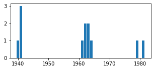
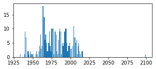
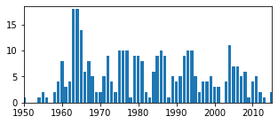

Disegnare grafici
Contents
4.7. Disegnare grafici¶
Il modulo plt può essere usato per produrre vari tipi di grafici. In generale le funzioni di questo modulo che generano un grafico basato su una serie di punti accettano come argomenti due liste contenenti rispettivamente le ascisse e le ordinate dei punti stessi. La funzione get_sorted_counts restituisce però una lista di coppie e non due liste di valori singoli. Se interpretiamo questa lista come una matrice, la trasposta di quest’ultima equivarrà a una lista che contiene esattamente le due liste che ci interessano. Per effettuare questa operazione risulta conveniente utilizzare il tipo di dato base messo a disposizione da numpy, np.array. Passando una lista (o una tupla, una lista di liste e così via) come argomento a np.array si crea un oggetto che corrisponde al corrispondente array. Su questo oggetto è possibile invocare il metodo transpose che restituisce il trasposto dell’array.
Va anche notato il fatto che se si tenta di trasporre un array monodimensionale transpose restituirà una vista identica all’argomento specificato.
import numpy as np
def get_sorted_counts(sequence):
counts = {}
for x in sequence:
if x in counts:
counts[x] += 1
else:
counts[x] = 1
pairs = counts.items()
return sorted(pairs, key=lambda p:p[1], reverse=True)
years = [1941, 1962, None, None, 1941,
1964, None, 1940, 1941, 1961,
None, 1963, None, 1963, 1981,
None, None, 1962, 1979]
np.array(get_sorted_counts(years)).transpose()
array([[None, 1941, 1962, 1963, 1964, 1940, 1961, 1981, 1979],
[7, 3, 2, 2, 1, 1, 1, 1, 1]], dtype=object)
np.array(get_sorted_counts(years)[1:]).transpose()
array([[1941, 1962, 1963, 1964, 1940, 1961, 1981, 1979],
[ 3, 2, 2, 1, 1, 1, 1, 1]])
Va notato come la prima coppia restituita da get_sorted_counts sia stata scartata tramite uno slicing in quanto fa riferimento a None e non a un anno, perché descrive il numero di casi in cui l’anno è un dato mancante. Usando una caratteristica di python è possibile assegnare le due liste ottenute direttamente a due variabili x e y:
a, b = (42, 102)
x, y = np.array(get_sorted_counts(years)[1:]).transpose()
Le due variabili x e y possono dunque essere passate come argomento al metodo plt.bar per produrre un grafico a barre che visualizzi le frequenze assolute degli anni di prima apparizione:
%matplotlib inline
import matplotlib.pyplot as plt
plt.rc('figure', figsize=(5.0, 2.0))
plt.bar(x, y)
plt.show()

Vale la pena commentare in modo approfondito le righe di codice appena eseguite, specificando la differenza tra generare e visualizzare un grafico. In generale, invocare un metodo in matplotlib ha l’effetto di modificare l’aspetto di un grafico (partendo ovviamente da un grafico vuoto). Ciò permette di sovrapporre diversi grafici, o di cambiare le etichette sugli assi e così via. Metodi come plt.bar visualizzano il grafico che corrisponde alla modifica apportata dal metodo eseguito, restituendo nel contempo dell’output testuale (una descrizione delle varie componenti del grafico stesso) che nella maggior parte dei casi non è particolarmente interessante. È per questo che l’ultima istruzione eseguita è plt.show(): questo metodo visualizza il grafico senza restituire alcunché.
La prima linea di codice fa riferimento a una caratteristica speciale di jupyter: tutte le linee che iniziano con il carattere % vengono chiamate line magic e permettono di effettuare operazioni accessorie, come per esempio l’interfacciamento con le operazioni di shell. In questo caso si tratta di una matplotlib magic che specifica che i grafici prodotti da matplotlib devono essere visualizzati direttamente nel notebook (senza questa operazione i grafici non verrebbero mostrati automaticamente e sarebbe necessario invocare altri metodi di matplotlib, per esempio per salvare i grafici su file system). Infine, la seconda linea ci permette di impostare le dimensioni dei grafici: i valori predefiniti genererebbero infatti delle figure un po’ troppo grandi.
4.7.1. Leggere dati da file (e un po’ di trucchi)¶
Di solito la quantità di dati da analizzare è tale che non è pensabile di poterli immettere manualmente in una o più lista come abbiamo fatto noi. Normalmente i dati sono memorizzati su un file ed è necessario leggerli. Prendiamo in considerazione il file di testo heroes.csv contenuto nella directory data: esso contiene 735 righe, ognuna con le informazioni relative a un supereroe, separate da virgola. Le prime tre righe del file sono indicate di seguito.
name;identity;birth_place;publisher;height;weight;gender;first_appearance;eye_color;hair_color;strength
A-Bomb;Richard Milhouse Jones;Scarsdale, Arizona;Marvel Comics;203;441;M;2008;Yellow;No Hair;100
Agent Bob;Bob;;Marvel Comics;178;81;M;2007;Brown;Brown;10
Il formato CSV (comma separated values) indica un record su ogni riga, separando i campi corrispondenti con un carattere speciale che di norma, ma non sempre, è la virgola. Come si può vedere, nel nostro caso la prima riga indica il tipo di dati presente in ogni riga (sono gli stessi a cui abbiamo fatto riferimento finora), viene usato il punto e virgola per separare i campi (ciò permette di inserire delle virgole nei luoghi di nascita, come nel primo record) e possono esistere dei valori mancanti (quali per esempio il luogo di nascita nel secondo record).
La cella seguente legge i contenuti del file e li inserisce nella lista heroes.
import csv
with open('data/heroes.csv', 'r') as heroes_file:
heroes_reader = csv.reader(heroes_file, delimiter=';', quotechar='"')
heroes = list(heroes_reader)[1:]
Nella cella:
l’apertura del file è fatta utilizzando la parola chiave
with: nelle istruzioni indentate che seguono è possibile usareheroes_fileper fare riferimento all’oggetto che descrive il file, e quest’ultimo sarà automaticamente chiuso, anche nel caso in cui vengano lanciate eccezioni, all’uscita del corpo diwith;la funzione che apre il file accetta come primo argomento il pathname corrispondente e come secondo una stringa che indica come effettuare l’accesso:
'rb'indica lettura in modalità binaria, cosa che permette di non doversi preoccupare di dover gestire come il sistema operativo indica la fine linea nei file di testo;la lettura effettiva del file è demandata al modulo
csvche si occupa direttamente di convertire dal formato CSV: la funzionecsv.readergestisce anche il fatto di avere un separatore diverso dalla virgola e permette di inserire un punto e virgola in un campo a patto di delimitare quest’ultimo tra doppi apici;la parola chiave
listconverte il contenuto del file in una lista, e da quest’ultima si esclude la prima riga (in quanto essa contiene le intestazioni dei campi).
Proviamo a visualizzare i primi due record (che corrispondono alle due righe sopra mostrate):
heroes[:2]
[['A-Bomb',
'Richard Milhouse Jones',
'Scarsdale, Arizona',
'Marvel Comics',
'203.21000000000001',
'441.94999999999999',
'M',
'2008',
'Yellow',
'No Hair',
'100',
'moderate'],
['Abraxas',
'Abraxas',
'Within Eternity ',
'Marvel Comics',
'',
'',
'M',
'',
'Blue',
'Black',
'100',
'high']]
Si vede che tutti i dati sono indicati come stringhe (vedremo più avanti un modo più efficiente di rilevare i diversi tipi di dati in modo corretto), e che la stringa vuota è usata per codificare i dati mancanti.
Per poter generare il grafico delle frequenze assolute con i nuovi dati è necessario estrarre l’anno di prima apparizione da ogni record. Potremmo farlo anche in questo caso usando il trucco di trasporre il corrispondente array, ma c’è un modo molto più efficiente che prende il nome di list comprehension, una sintassi specifica di python. Invece di creare una lista in modo estensivo (cioè elencando i suoi elementi), la list comprehension permette di crearla in modo intensivo, specificando come trasformare gli elementi di un’altra lista che già abbiamo a disposizione. La sintassi di base di una list comprehension è
[f(e) for e in l]
dove f(e) indica una funzione o un’espressione che dipende dalla variabile muta e e l è una lista di cui quindi e indica il generico elemento. Questa espressione permette di costruire una nuova lista in cui il primo elemento è il risultato del calcolo di f sul primo elemento di l, il secondo è il risultato di f secondo elemento di l e così via. È inoltre possibile utilizzre la sintassi [f(e) for e in l if g(e)], che indica che nella creazione della nuova lista bisogna limitarsi a considerare gli elementi e della lista originale che rendono vera l’espressione g(e). Pertanto
years = [int(h[7]) for h in heroes if h[7]]
assegna a years la lista che contiene l’anno di prima apparizione di ogni supereroe (che infatti occorre in ottava posizione), convertito da stringa a intero, ma senza considerare le stringhe vuote (in python la stringa vuota equivale a un’espressione logica falsa esattamente come 0 o 0. in C, e le altre stringhe equivalgono a un’espressione logica vera), operazione necessaria altrimenti la conversione a intero di un dato mancante lancerebbe un’eccezione.
A questo punto è possibile generare il grafico delle frequenze assolute:
counts = get_sorted_counts(years)
x, y = np.array(counts).transpose()
plt.bar(x, y)
plt.show()

Il grafico appare “spostato” verso sinistra, a causa della presenza di una barra in prossimità dell’anno 2100. Potrebbe essere un supereroe effettivamente nato nel futuro, oppure si potrebbe trattare di un dato errato. Si tratta di una situazione più comune di quanto non si possa pensare: queste misurazioni affette da rumore prendono il nome di dati fuori scala o outlier e più avanti vedremo come gestirle. Per ora limitiamoci a vedere quale sia questo valore. Possiamo farlo usando una list comprehension appena più complicata di quella vista poco fa:
[year for year in years if year > 2020]
[2099]
In soldoni, la presenza dell’anno 2099 causa lo spostamento del grafico. Potremmo eliminare il record corrispondente dal nostro dataset, ma così facendo perderemmo i valori per gli altri campi che non è detto siano anch’essi degli outlier. Un modo molto più pratico di procedere è quello di visualizzare il grafico restringendo le ascisse all’intervallo temporale che va dal 1950 al 2015: ciò viene fatto invocando la funzione plt.xlim e passandole una coppia con gli estremi di questo intervallo. Già che ci siamo, possiamo anche impostare l’ampiezza dell’asse delle ordinate in modo che ci sia un po’ di spazio sopra la barra che corrisponde alla frequenza massima:
plt.bar(x, y)
plt.xlim((1950, 2015))
plt.ylim((0, 18.5))
plt.show()

- l'invocazione del metodo `transpose` è sostituita dall'utilizzo della _proprietà_ `T`: si tratta essenzialmente della stessa cosa, ma permette di essere più succinti;
- invece di assegnare a due variabili `x` e `y` le liste di ascisse e ordinate, si usa l'operatore `*` per effettuare un'altra forma di _unpacking_ delle liste in modo che i due elementi della lista restituita da `T` vengano rispettivamente usati come primo e secondo argomento di `np.bar`.